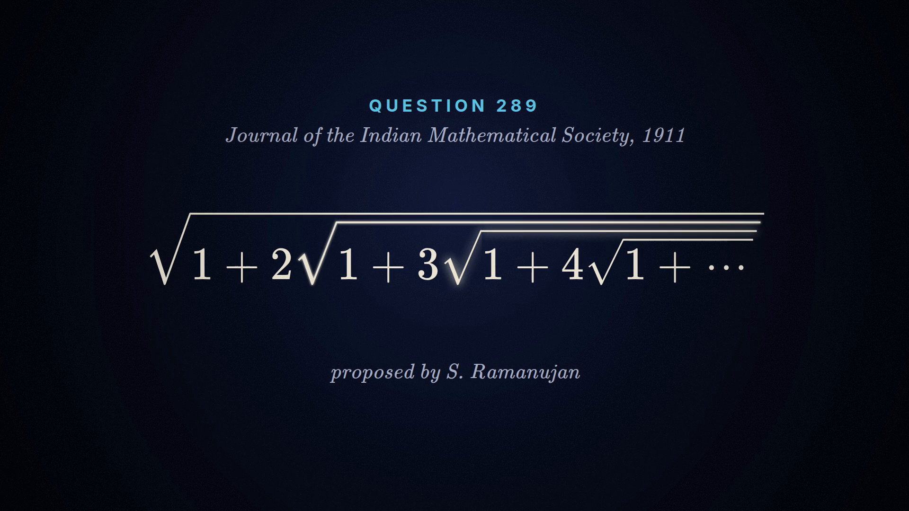
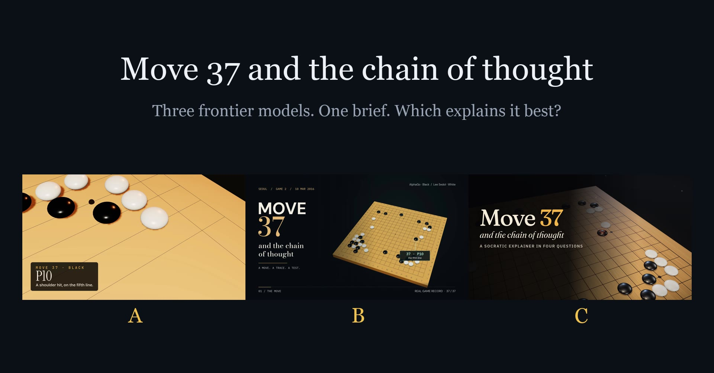

Socratic
Videos that ask before they tell
Each explainer stops at the key steps and asks you first. Pick an answer, see why, and the video goes on from there. Every one is made by a coding agent with showtime, rendered locally, and every fact on screen has a source.

Ramanujan's hidden step
His 1911 puzzle: an infinite nest of square roots. Four questions, 82 seconds.

Move 37 and the chain of thought
Three frontier models, one brief, a blind vote. Four questions, about 90 seconds each.